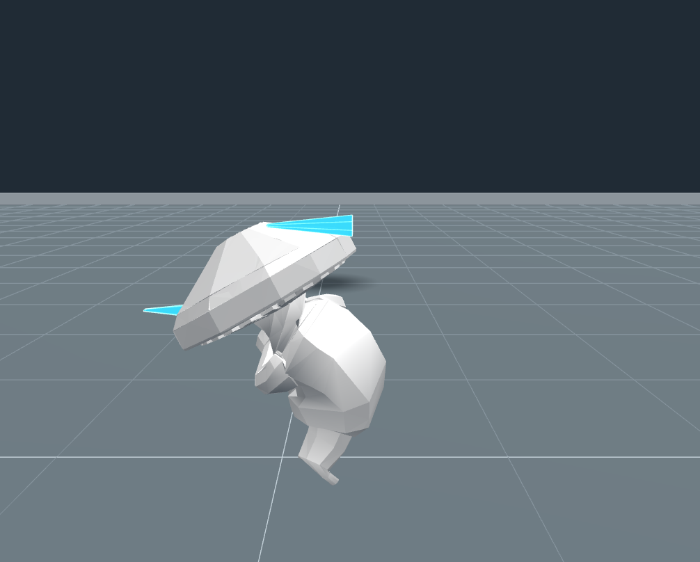
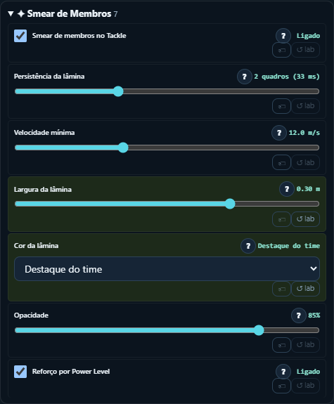
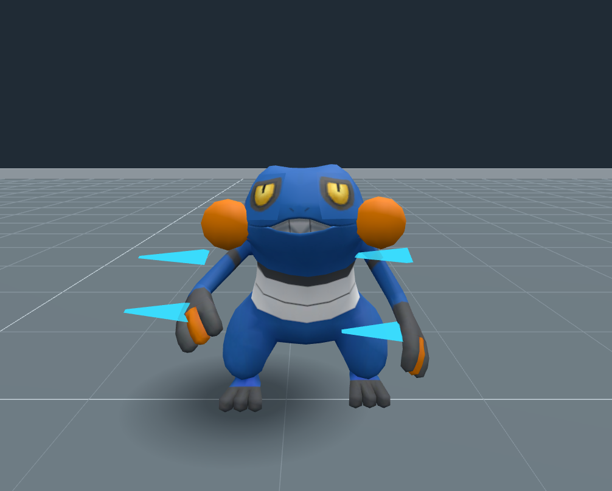

Branch isolada codex/tackle-limb-smear, baseada na entrega de Squash & Stretch. O checkout principal não foi alterado.
Abrir o jogo · Portal · Documentação
Importe um GLB animado. Acesse Ações → Tackle → Smear de Membros e use X. A lâmina só nasce acima da velocidade mínima.
Resultados e medição de CPU no navegador. A medição da rotina não garante 60 FPS do jogo completo em toda GPU.
PL3, largura 0,30 m e cor de destaque para distinguir a lâmina do corpo.


Quatro âncoras: punhos e laterais do dorso, verificadas no GLB real.

Suíte completa, tipos, modo offline e build aprovados. Benchmark delimitado: dois Cogumelos na Intel UHD, 60 FPS com e sem efeito; P95 da atualização de 0,10 ms. O verificador de workspace rejeita o caminho do worktree interno; não houve integração no checkout principal.